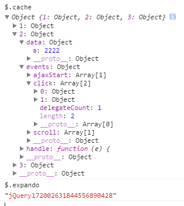

数据缓存，即采用闭包的方法将数据保存到$.cache变量中，进行数据的暂存和快速查询。其API为$(**).data,意为将数据保存在DOM节点关联的变量中，其中jquery.expendo为DOM节点的一个属性，属性对应的值为$.cache中的key，如此实现关联；同理jquery的事件机制也是采用这种方法进行数据的保存的，只是其保存在缓存的events字段下，而数据缓存保存在data字段下。
看图即可了解缓存数据的数据组织结构，也方便后面的理解：

其中每个缓存数据的节点都有jQuery172002631844556890428的属性，例如为2，再看$.cache[2].data就是节点缓存值
另，缓存值的查找除了源于$.cache，如果值为空，程序会继续进入dom节点查找属性data-*进行数据的查找，如果找到会将值写进cache中，方便下次快速查找。
部分代码：
data: function(elem, name, data, pvt /* Internal Use Only */ ) {
if (!jQuery.acceptData(elem)) {
return;
}
/**
* 1、从elem节点取属性为jQuery.expando的值，并通过该属性值获取缓存为第几个缓存
* 2、从$.cache中获取该值对应的值obj1
* 3、从obj1中取得data属性值obj2
* 4、从obj2中查询该name对应的值，如果没有name，返回obj2
*/
var privateCache, thisCache, ret,
internalKey = jQuery.expando,
getByName = typeof name === "string",
isNode = elem.nodeType,
cache = isNode ? jQuery.cache : elem,
id = isNode ? elem[internalKey] : elem[internalKey] && internalKey,
isEvents = name === "events";
if ((!id || !cache[id] || (!isEvents && !pvt && !cache[id].data)) && getByName && data === undefined) {
return;
}
if (!id) {
if (isNode) {
elem[internalKey] = id = ++jQuery.uuid;
} else {
id = internalKey;
}
}
if (!cache[id]) {
cache[id] = {};
if (!isNode) {
cache[id].toJSON = jQuery.noop;
}
}
if (typeof name === "object" || typeof name === "function") {
if (pvt) {
cache[id] = jQuery.extend(cache[id], name);
} else {
cache[id].data = jQuery.extend(cache[id].data, name);
}
}
privateCache = thisCache = cache[id];
if (!pvt) {
if (!thisCache.data) {
thisCache.data = {};
}
thisCache = thisCache.data;//取值
}
if (data !== undefined) {
thisCache[jQuery.camelCase(name)] = data;
}
if (isEvents && !thisCache[name]) {
return privateCache.events;
}
if (getByName) {
ret = thisCache[name];
if (ret == null) {
ret = thisCache[jQuery.camelCase(name)];//返回值
}
} else {
ret = thisCache;
}
return ret;
}
//两步取值部分
if (data === undefined && elem) {
data = jQuery.data(elem, key);//完成两步取值：1、从$.cache中取值
data = dataAttr(elem, key, data);// 2、当取不到值的时候从dom的data-key字段取值，同时将值插进缓存里面
}